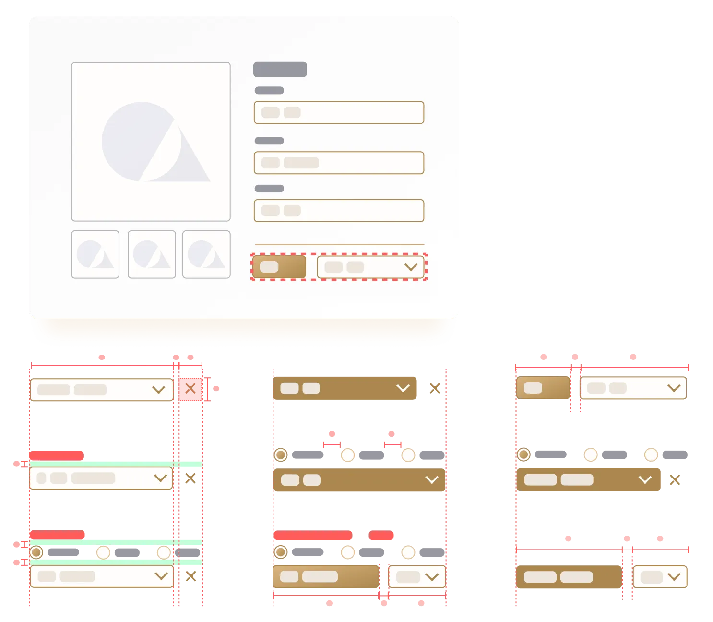
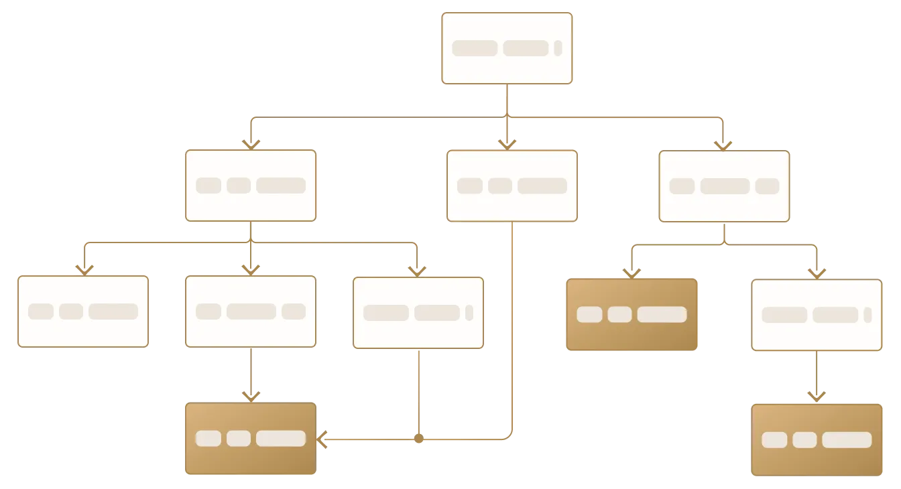
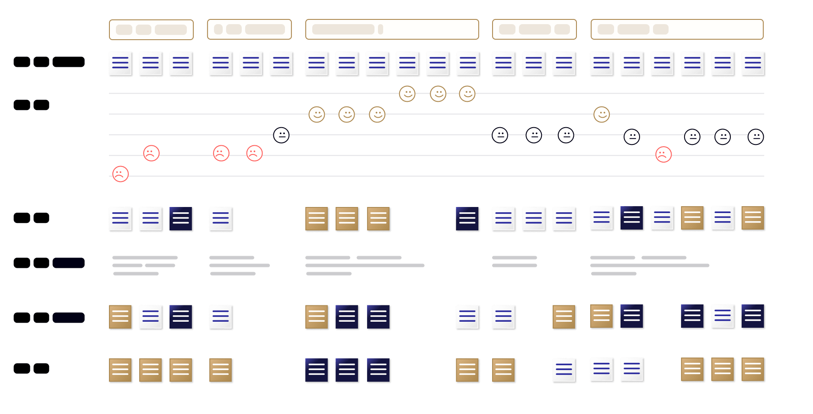
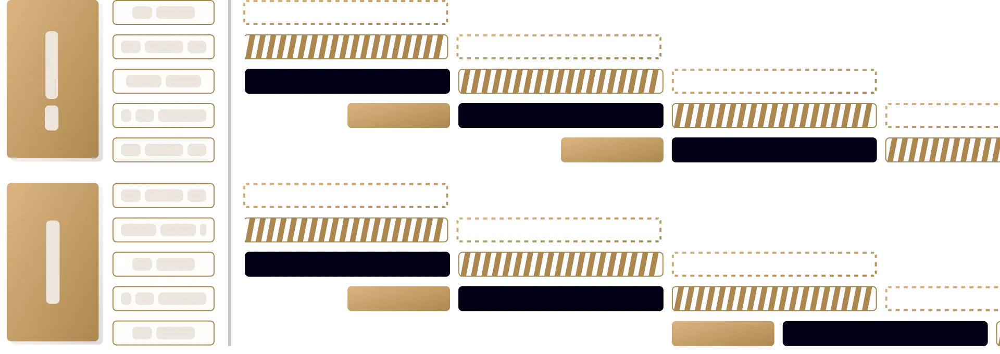

I’m not only interested in drawing fanciful ideas on paper but bringing them into reality.
Getting my start at early-stage startups as the solo/early design hire, my superpower is homing in on what features need to be built and by when, then support teams to deliver precisely that. And I hold deliverables to a high bar.
Doing the proper research, building for the right users, and solving the right problems with an on-point design is important, but implementing, executing, and delivering is ultimately what matters. As a product partner, I guide teams to fix their eyes on the ultimate product goals and work backward.

To support complex system logic, I also front-load codebase design systems to accelerate engineering and reduce tech debt.

I’ve contributed decision trees for backend logic based on user-centric thinking.
— Nick Woods, Head of Product at Polycam
— Liana Lawrance, Design Manager at Rocket Lawyer

I’ve owned user or customer journey map that incorporates voices from all angles, highlighting areas of improvement for specific touchpoints.
— Hanmei Wu, Co-Founder at Empowerly
— John Maier, PSPO (Design mentor from 2019)

I’ve owned user or customer journey map that incorporates voices from all angles, highlighting areas of improvement for specific touchpoints.
— Ethan Goldspier, VP Sales and Business Development at Polycam
— Siavash Zamani, Growth Engineer at Polycam
— Jeaninne Singh, Director of Merchandising at Collov

I’ve owned product roadmaps and facilitated sprints, ensuring that every epic reaches the finish line and adds up to a meaningful initiative.
— Cythera Carino, Product Designer at Empowerly


Made in Figma + Webflow by Lai Jing Chu, 2025.
Take a peek at the website style guide.